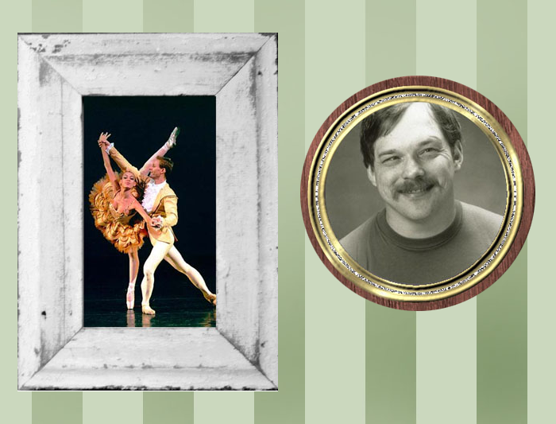
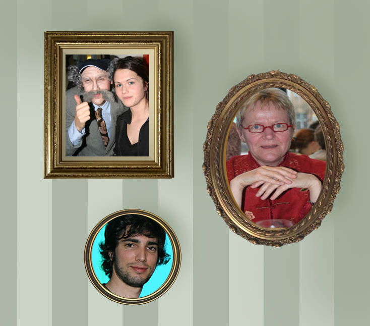
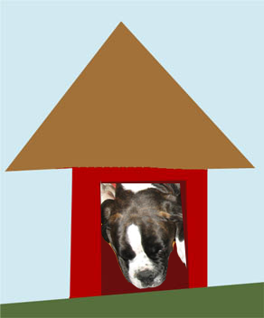

Adobe PhotoShopin perusteet
Käymme tällä kurssilla läpi kuvankäsittelyn perusteet. Kuvankäsittelyä sivutaan ehkä myös muilla kursseilla eikä tässä ole tarkoitus mennä kovin monimutkaisiin asioihin. Tämän harjoituksen asiat ovat sellaisia jotka ovat tehtävissä myös muilla kuvankäsittelyohjelmilla ja ovat kuvankäsittelyn asioita joita jokaisen tulisi tietää. Näitä asioita tarvitaan silloin tällöin kun tehdään web-sivujen ulkoasua.
Nämä harjoitukset kannattaa tehdä K-asemalla ja siirtää sitten omaksi alikansiokseen Orientaatio-kurssin OneDrive-kansioosi. Tee siis kansio K:\Orientaatio\Photoshop itsellesi.
Harjoitus 1

- Tallenna kuvat paintings.jpg ja wall.jpg kansioosi.
- Avaa kuva paintings.jpg Photoshopissa. Käytä rectangular selection tool-työkalua valitaksesi neliön ja kopioi se.
- Avaa kuva wall.jpg, liitä neliön muotoinen kuva seinälle. Käytä Move Tool-työkalua (Siirtotyökalu) siirtääksesi kohteen oikeaan kohtaan.
- Käytä soikion muotoista valintatyökalua valitaksesi pyöreän kuvan pictures.jpg-kuvasta. Leikkaa se.
- Liitä pyöreä maalaus seinälle.
Huom: Muokkaa / Vapaa muunnos -valinnalla voit muuttaa tietyn tason kuvan kokoa. Et voi käyttää crop-työkalua (Rajaus) tasolle mutta voit valita siitä osan ja poistaa tarvittaessa.
Harjoitus 2

- Tallenna kuvat framethis1.jpg, framethis2.jpg, framethis3.jpg ja emptyframes.jpg itsellesi.
- Avaa kuvat Photoshopissa.
- Käytä sopivaa Selection Tool-työkalua kopioidaksesi kuvan, kun olet kopioinut sen valitse tyhjä tila yhden kehyksen sisältä. Käytä toimintoa Paste Into liittääksesi kuvan kehyksen sisälle.
- Käytä Move Tool-työkalua (Siirtotyökalu) liikuttaaksesi kuvan rajojen sisällä.
- Toista kaikille kuville.
Harjoitus 3

- Tallenna kuvat dog.jpg ja doghouse.jpg kansioosi.
- Avaa kuvat Photoshopissa.
- Käytä Lasso- tai Magneetti Lasso- valintatyökalua valitaksesi koiran. Tarvittaessa käytä zoom-työkalua.
- Kopioi koira valittuasi sen.
- Käytä Polygonal Lasso Tool -työkalua (Monikulmiolasso) luodaksesi valinnan koirankopin oviaukkoon. Käytä Paste Into -valintaa (Muokkaa / Liitä määräten / Liitä sisään) liittääksesi koiran oikeaan paikkaan. Liikuta koiraa Move Tool-työkalulla. Käytä Trasform Scale -työkalua (Muokkaa/ Vapaa muunnos) muuttaaksesi kokoa.
Harjoitus 4
- Tallenna itsellesi kuvat ghost.jpg ja ghostcastle.jpg.
- Avaa kuvat Photoshopissa.
- Käytä Selection Tool-työkalua valitaksesi haamun. Kopioi haamu. Liitä haamu useita kertoja linnaan. Käytä Paste Into-työkalua halutessasi. Käytä Move Tool (Siirtotyökalu) -työkalua liikuttaaksesi haamut haluttuihin paikkoihin.
- Käytä Transform -toimintoja muuttaaksesi eri haamujen ulkonäköä.
- Käytä kaikille haamuille Opacity (Peittävyys) joka on alle 100% jotta tausta näkyisi hieman läpi.
Harjoitus 5
- Tallenna itsellesi kuvat guitar.jpg ja flowerback.jpg.
- Avaa kuvat Photoshopissa.
- Valitaan aluksi kitara. Valitse ensin musta alue taikasauvalla (Magic Wand Tool). Säädä Tolerance tarvittaessa n. 20-30 välille.
- Otetaan valinnan vastakohta (Invert / Käänteinen).
- Kun mustan vastakohta on valittuna kopioi kitara.
- Liitä kitara kukkataustalle.
Harjoitus 6
- Tallenna kuva colorize.psd kansioosi.
- Avaa kuva Photoshopissa. Tämä kuva on Photoshop-muodossa ja sisältää useita layer-tasoja.
- Käytä Paint Bucket Tool (Maalipurkki)
- -työkalua värittääksesi kuvan. Valitse oikea taso ennen väritystä. Kokeile Color Picker ja Eye Dropper Tool-työkaluja (Pipetti) värin valinnassa.
- Piirrä ansikte (kasvot) -tasolle Brush Tool-työkalulla (Sivellin)kasvot.
Harjoitus 7
- Luo uusi kuva jossa piirrät oman kuvasi. Tee koosta 300 px x 400 px. Resoluution tulisi olla 72 px/inch.
- Käytä Brush Tool-työkalua piirtääksesi kuvan. Tee oma layer-taso piirrokselle, älä piirrä Background-tasole.
- Kokeile Eraser Tool-työkalua poistaaksesi virheet.
- Tallenna kuva jpg-muodossa (harjoitus7.jpg).
Harjoitus 8
- Tallenna kuvat earth.jpg, mars.jpg ja jupiter.jpg kansioosi.
- Luo uusi kuva joka on kooltaan 500 x 400 px. Resoluutio 72 px/inch. Tehdään tästä avaruuden tausta. Tee ensin maaliämpärillä tausta haluamallasi värillä. Käytä Brush Tool -työkalua maalataksesi tähtiä.
- Avaa tallennetut kuvat. Käytä Elliptical Selection Tool -työkalua valitaksesi planeetan. Kopioi ja liitä avaruuden taustalle.
- Tehdään planeetoille varjostus. Käytetään Eraser Tool-työkalua, ota riittävän matala Opacity.
Harjoitus 9
- Tallenna kuva dialogue.jpg kansioosi.
- Avaa kuva Photoshopissa. Keksi puhekupliin omat tekstit. Käytä Text Tool-työkalua kirjoittaaksesi tekstit paikalleen. Käytä erilaisia fontteja, kokoja ja värejä.
Harjoitus 10
- Tallenna kuva transform.psd kansioosi.
- Avaa kuva Photoshopissa.
- Kuva koostuu kahdeksasta tasosta, seitsemän asiaa ja tausta. Tehtävänäsi on siirtää asiat oikeille paikoille ja käyttää Trasform-funktiota muuttaaksesi kokoa sopivaksi.
- Aseta sukeltaja veteen. Käytä Eraser Tool-työkalua säätämällä Opacitya sopivaksi jotta hän näyttäisi nousevan vedestä.
Harjoitus 11
- Tallenna kuva color.jpg itsellesi omaan kansioosi.
- Käytä Selection Tool-työkalua ja valitse varovasti iiris ja pupilli tytön vasemmasta silmästä.
- Aseta Selection Type muotoon Add to Selection (Shift-painike pohjassa) ja valitse myös toinen silmä (pideä Shift-painike pohjassa niin voit valita useita alueita).
- Käytä Color Balance-toimintoa (Kuva / Säädöt / Väritasapaino) muuttaaksesi silmien väriä. Kun olet valmis, ota valinta pois käytöstä (Deselect, Valitse / Kumoa valinta).
- Toista toiminta eri asioille kuvassa. Valitse erilaisia aluita ja kokeile Color Balance-toiminta. Testaa Shadows, Midtones ja Highlights.
Käytetty lähde: http://distans.svefi.net/exercises/
{kind=link}
{kind=link}
{kind=link}
{kind=link}
{kind=link}
{kind=link}
{kind=link}
{kind=link}
{kind=link}
{kind=link}
{kind=link}
{kind=link}
{kind=link}
{kind=link}
{kind=link}
{kind=link}
{kind=link}